Ombrelune 0.2
Trois héros qui ne se jouent pas pareil, de l’équipement à gagner, cinq nouveaux monstres et des raisons de revenir chaque jour.
Jouer au prototype ›Le prototype web tourne sur la même simulation que l’app iOS. Pour tout voir vite : jouer quelques niveaux, ouvrir l’écran Héros (bouton « Essayer » sur les héros verrouillés), l’équipement, les quêtes et le bestiaire depuis la carte.
1Trois héros, trois façons de jouer
Jusqu’ici, les trois héros partageaient le fil de découpe ; seuls leur tir et un petit pouvoir de départ changeaient. Chacun a désormais sa mécanique, sa famille de six pouvoirs (la première carte de chaque choix) et une aide à l’écran les premières fois.
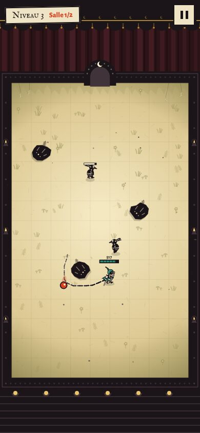
Ciseaux de luneL’Éclaireuse
Elle entoure ses ennemis de son fil : la boucle refermée les découpe du papier. Inchangée, c’est la référence.
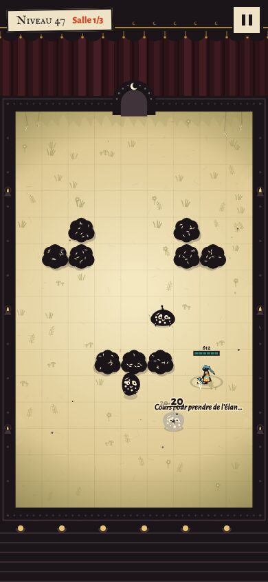
Élan et bourrasqueLe Moine du vent
Courir charge l’élan (anneau à ses pieds). S’arrêter le libère : dégâts autour de lui, ennemis repoussés, tireurs interrompus, projectiles dissipés. Un jeu de va-et-vient.
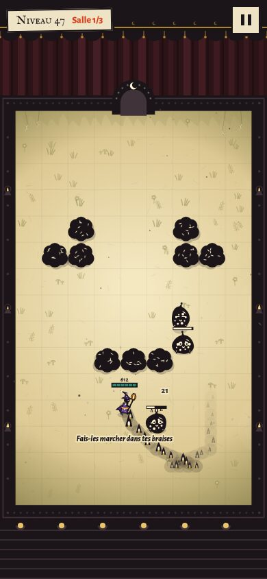
Traînée de braisesLe Sorcier de braise
Ses pas laissent des braises qui brûlent les ennemis au sol ; ses projectiles font couver leur cible. On attire les poursuivants dans le feu ; les volants lui échappent.
Le Moine se débloque au niveau 40 (ou avec l’offre de départ), le Sorcier au niveau 100. Avant, on peut les essayer dans une salle d’entraînement, et la carte montre leur médaillon sur le niveau qui les donne.
2De l’équipement à gagner
En plus des talents, quatre emplacements : aiguille (dégâts), cape (PV), masque (cadence) et talisman (puissance de la mécanique du héros). 24 objets, chacun avec une statistique secondaire et une ligne d’histoire, en quatre raretés : commun, rare, épique, légendaire.
- Aucun hasard, aucun achat : six niveaux par chapitre donnent un objet précis à leur première victoire, annoncé d’avance sur la carte et avant le niveau. Les boss donnent un objet épique ; le boss de fin de royaume, un légendaire.
- Éclats : chaque victoire en donne, même rejouée. Avec l’or, ils améliorent les objets ; recycler un objet en rend.
- À la victoire, la carte de l’objet se retourne, avec un bouton « Équiper » s’il est meilleur.
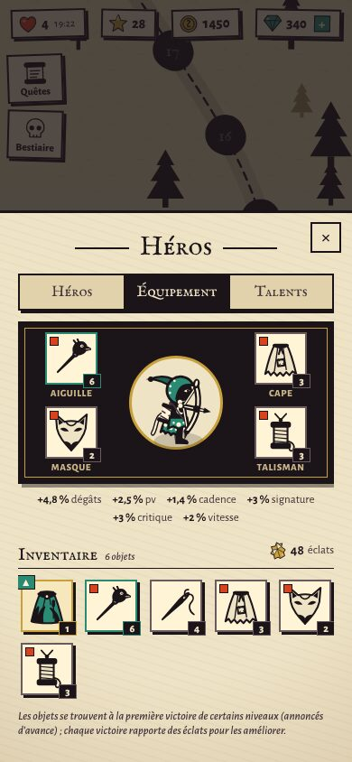
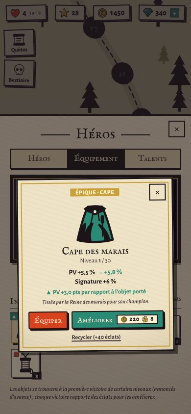
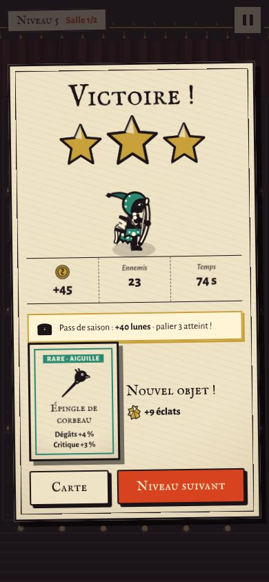
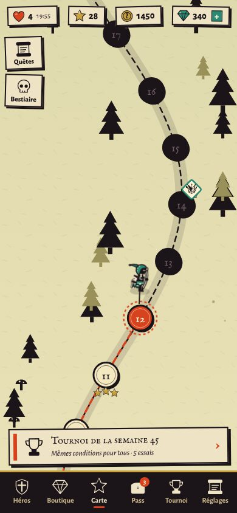
3Cinq nouveaux monstres
Les chapitres 11 à 15 n’introduisaient plus aucun ennemi. Ils en ont maintenant un chacun, avec une mécanique nouvelle, toujours télégraphiée :
- Lampion : il fonce, s’arrête et gonfle pendant 0,8 s avant d’exploser. L’abattre à temps l’éteint.
- Araignée tisseuse : sa toile ralentit l’héroïne ; la tuer fait tomber ses toiles.
- Scarabée-bouclier : son bouclier arrête les aiguilles de face. Il faut le contourner ou passer par la mécanique du héros.
- Montreur d’ombres : il garde ses distances et invoque des ombres rapides.
- Spectre de papier : sa marque apparaît au sol, il s’y téléporte et tire en anneau.
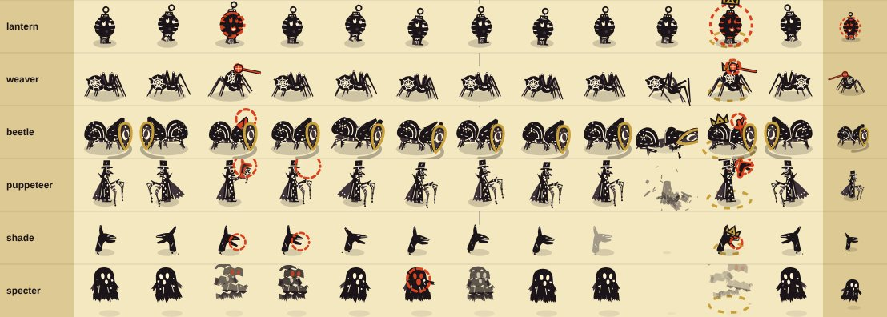
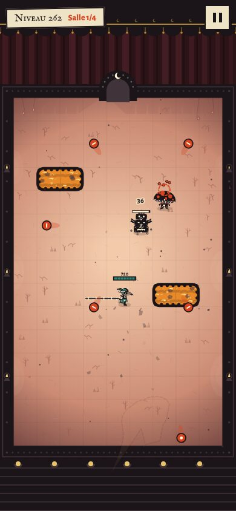
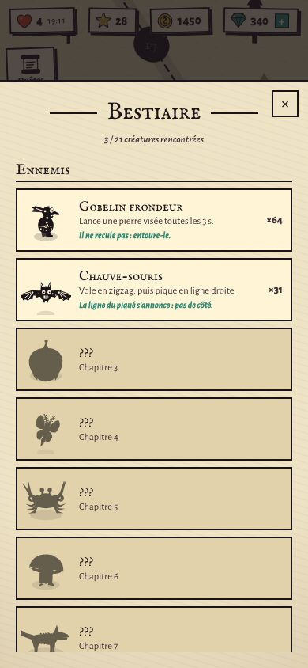
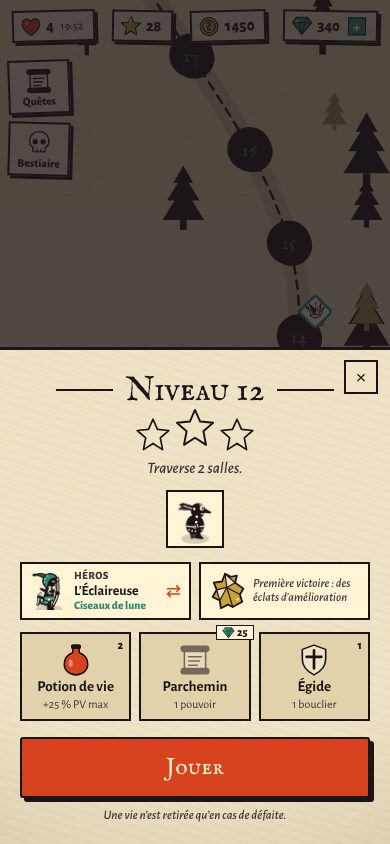
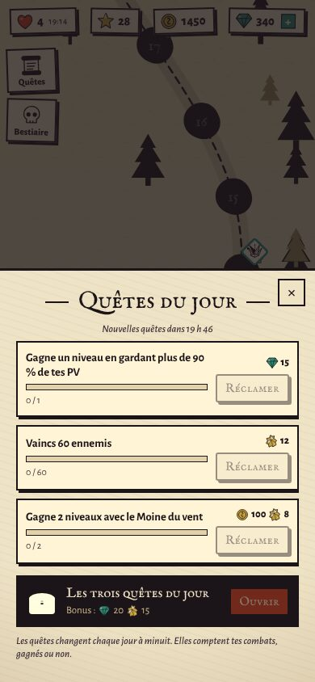
4Des raisons de revenir
- Quêtes du jour : trois par jour, tirées de la date (gagner avec tel héros, rejouer un niveau, 3 étoiles, un boss…), plus un bonus pour les trois.
- Bestiaire à compléter (21 créatures, silhouettes tant qu’on ne les a pas croisées).
- Ce qui vient se voit : objets et héros sur la carte, nouveau monstre présenté avant son niveau, écran « Nouveau héros ! » au déblocage.
- Rejouer rapporte : éclats à chaque victoire, quêtes qui demandent de changer de héros.
5Mesuré par les bots
Les 300 niveaux ont été régénérés et revalidés : les bots modélisent désormais l’équipement attendu comme ils modélisaient les talents (sans cela, l’équipement aurait fait passer le bot moyen de 41 % à 70 % sur les niveaux difficiles).
| Héros | Niveaux mesurés | Bot moyen | Bot expert | Part de la mécanique dans les dégâts |
|---|---|---|---|---|
| Éclaireuse (fil) | 7 à 300 (12 niveaux) | 49 % | 94 % | 1–44 % |
| Moine du vent (bourrasque) | 7 à 300 (12 niveaux) | 70 % | 98 % | 29–64 % |
| Sorcier de braise (braises) | 100 à 300 (8 niveaux) | 70 % | 94 % | 22–65 % |
24 parties par héros et par bot sur chaque niveau publié, avec l’équipement attendu à ce stade. Les 300 niveaux restent dans leurs bandes de difficulté (bot moyen : 90 % aux chapitres 1–2, ~71 % aux niveaux normaux, 38 % aux difficiles, 36 % aux boss). Les héros à débloquer sont plus confortables que l’Éclaireuse sur les niveaux à foule et plus durs contre le boss final (niveau 300 : 8–13 % au bot moyen).
À décider ensemble
- Héros débloqués plus faciles (+20 points au bot moyen) : on garde cela comme récompense de progression, ou on les ramène au niveau de l’Éclaireuse ? Baisser la bourrasque fait apparaître un seuil brutal (à 100 de dégâts, le Moine ne passe plus le niveau 47) : il faudrait plutôt jouer sur le rayon ou le délai.
- Paliers de déblocage : Moine au niveau 40, Sorcier au niveau 100. Plus tôt pour accrocher, plus tard pour faire durer ?
- Puissance des légendaires : après les boss de fin de royaume (niveaux 60 et 100), les niveaux suivants comptent jusqu’à deux fois plus d’ennemis, parce que les bots supposent l’objet équipé et amélioré. Atténuer le légendaire, ou laisser quelques niveaux avant de le compter ?
- Équipement jamais vendu : butin annoncé et sans hasard, rien à acheter qui donne de la puissance (la boutique reste cosmétique, vies et bonus). À confirmer comme principe de monétisation.
- Priorité du port iOS : tout reporter d’un bloc, ou d’abord les héros et les monstres (simulation), puis l’équipement et les quêtes ?
6Ce qui reste
- Port iOS de tout ceci (simulation Swift au bit près, rendu, écrans, sauvegarde, traductions) : la liste exacte est prête (
docs/PORT_IOS_V02.md). Rien n’a encore été compilé côté iOS. - Atlas iOS des six nouvelles marionnettes.
- Une recette à la main des trois héros : les bots disent si c’est faisable, pas si c’est agréable.